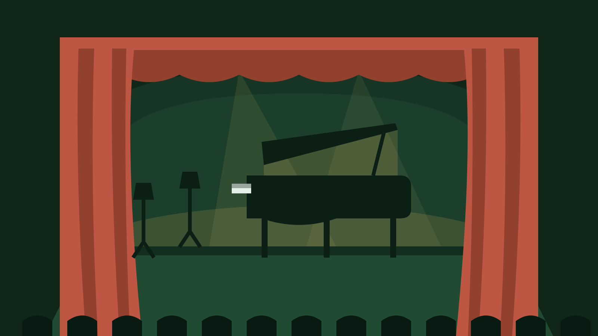

Three instruments
Piano, violin, and viola. We teach what we can teach well rather than spreading the schedule thin.

About us
Toucan Music is a community nonprofit teaching piano, violin, and viola to children who have had the least access to music education.
Who we are
We started with a handful of borrowed instruments and one room on loan. What has not changed is the shape of the thing: volunteer teachers, a fixed weekly schedule, and no tuition at any point. Our rooms are small on purpose, so a teacher can hear every player and nobody spends the hour waiting for a turn.
The team
Teachers, coordinators, and volunteers who keep the classes running week to week.
Piano, violin, and viola. We teach what we can teach well rather than spreading the schedule thin.
Every student picks an instrument and keeps one regular class slot on the calendar for the season.
Showcase nights give students an audience. Performing is part of learning, not a reward for the advanced.
Join a class, claim a volunteer spot, or write to us with a question.